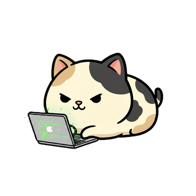
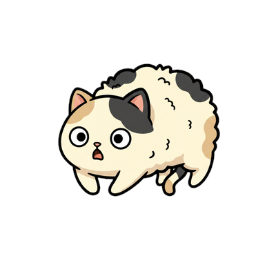
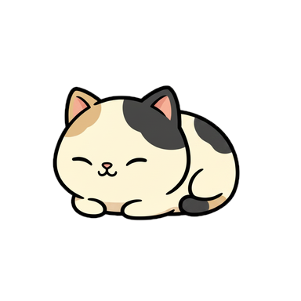
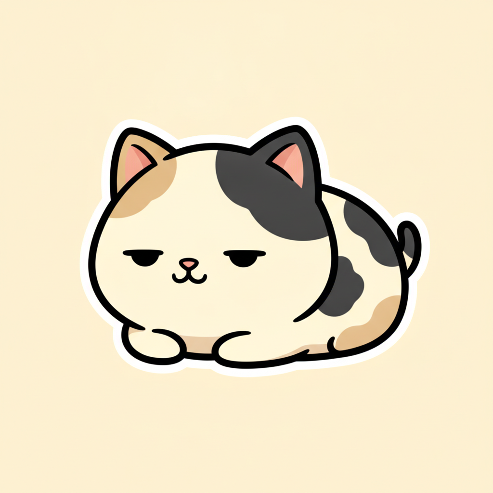
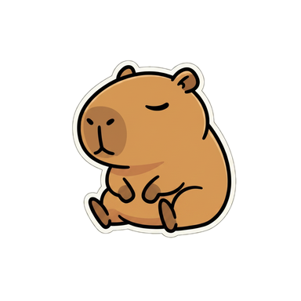
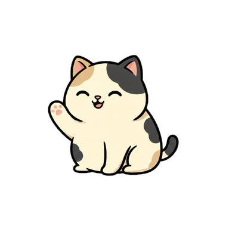
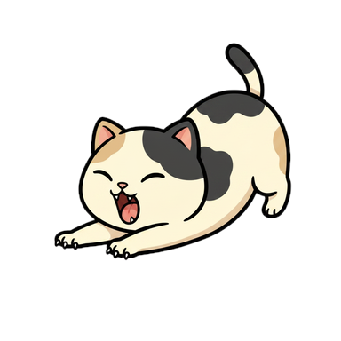

六种状态对应 Claude Code 的六种处境。气泡带点性格，不是仪表盘式播报。

在干活BUSY它读文件、跑命令、写代码的时候，猫趴着敲小键盘。
 等你决策WAITING
等你决策WAITING
停在权限确认上就招手叫你，气泡标明是哪个项目、哪个工具。一声轻提示音，可关。
 跑完了CELEBRATING
跑完了CELEBRATING
任务收工，庆祝几秒钟，然后回去待机。

出状况ALERT报错了会炸毛，气泡常驻到你处理为止。这一处不出声。

你走开了SLEEP键鼠几分钟没动它就打盹；你一回来，伸个懒腰醒过来。
 摸一下PET
摸一下PET
点它一下会有反应。没有养成、没有数值，纯陪着。
市面上的桌宠，每加一个形象都是美术几天的手工活。DeskCat 的形象是喂一张参考图， 让 AI 把九个状态全生成出来——所以它能有很多只，而不是就那么几只。

一张参考图AI 生成九态
换张图就是新形象


内置三花猫和水豚两套，都是这条管线产出的。 用自己的图生成专属形象正在做，会在后续版本开放。
桌宠是要挂一整天的东西。下面的数字是 release 版实测，不是估算。
感知键鼠时只读系统的「距上次输入过了几秒」这一个数字，物理上拿不到你敲了什么。 全程不需要辅助功能授权。你的代码、对话、按键，一个字都不会离开这台电脑。
已经过 Apple 签名与公证，双击就能用，不用绕安全提示。
它会把回调写进 ~/.claude/settings.json，只追加、不覆盖你已有的配置，写入前自动备份。随时可一键断开还原。
剩下的交给猫。要调大小、换形象、改判定时长，都在设置窗口里。
macOS 12 及以上 · 免费 · 无需注册